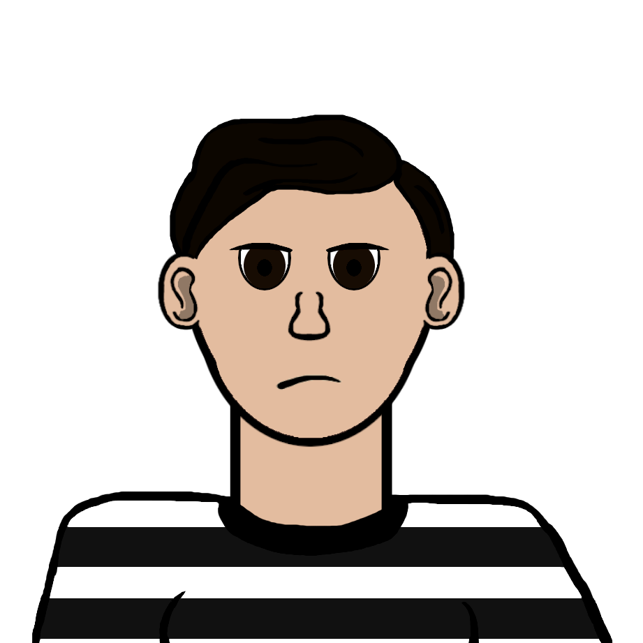
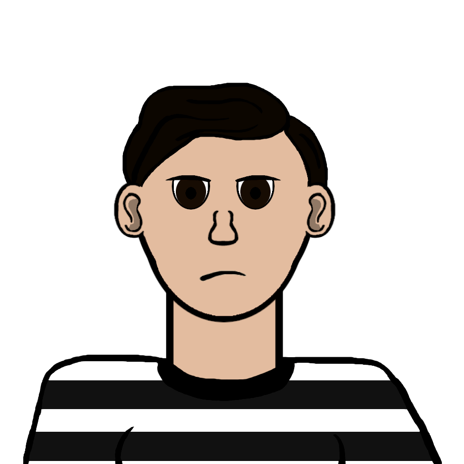

During the winter of 2022, I made the art for the game Stan Stopper. It is an arcade style game in which you play as a bodyguard who needs to protect the kpop idol from having fangirls disrupt his performance. With the help of a t-shirt cannon, the player must shoot the fans before they reach the idol and push them off the stage.
GIMP
Game: link
2022
More
Out of all the game jams I made for that course, this one challenged me the most because it was my first time making pixel art and sprite sheets for a game. I remember I first made gifs for the running animation until one of my teamates told me about sprite sheets. I learned how to make them really quickly, but I had a hard time making pixel art and had to improvise. On GIMP, I drew the character how I normally would, added a grid over it and filled in the squares to give it the pixelated look. A few months later, I took a workshop on pixel art and learned that the technique I used was completely wrong and that pixel art requieres a lot more focus and care than I thought.
I made this game for a Game Jam in a Game Design class along side Étienne Racine and Che Tan who handled the programing, sounds and additional art.
 
